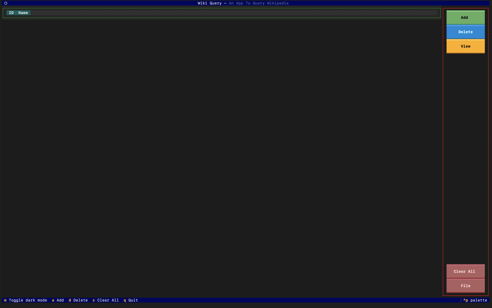
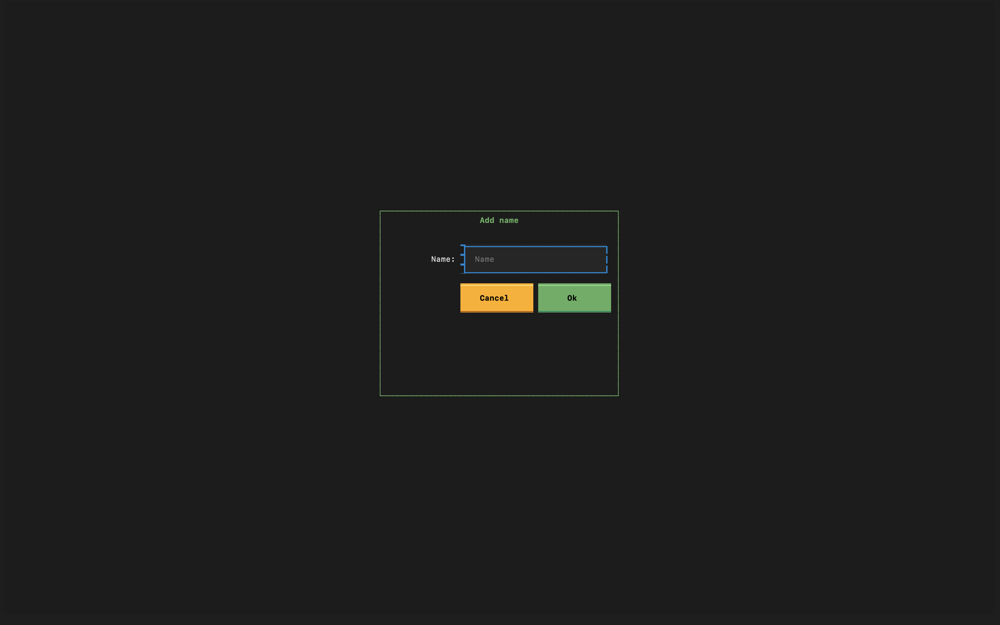
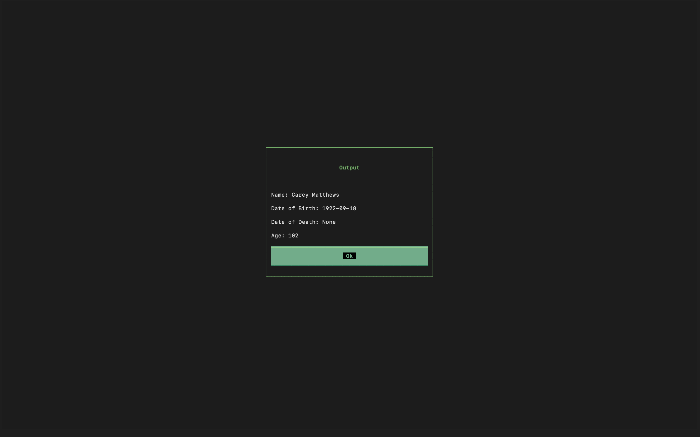

Overview
The Wikipedia Name Query is a Python application that retrieves biographical information about people from Wikipedia, including their full name, date of birth, date of death, and age. It features both a Text User Interface (TUI) and a Command Line Interface (CLI) for easy interaction.
Features
- Query Wikipedia for biographical information
-
Interactive Text User Interface (TUI) powered by
textual - Command Line Interface (CLI) for quick queries
- Local database storage for queried names
- Batch processing support
- Dark/Light theme toggle in TUI
Installation
To install and run the application, follow these steps:
-
Clone the repository:
git clone https://github.com/yourusername/Wikipedia-Name-Query.git cd Wikipedia-Name-Query -
Install dependencies:
pip install -r requirements.txt -
Run the TUI:
textual run App.py
Usage
Text User Interface (TUI)
Launch the TUI using:
textual run App.pyUse the interface to add, view, and manage queries. Toggle themes, import names from files, and more.
Command Line Interface (CLI)
Use the CLI for quick queries. Example commands:
# Get age
python -m wikipedia_name_query age --Name "Albert Einstein"
# Get all information
python -m wikipedia_name_query Output --Name "Albert Einstein"
Screenshots




Contributing
Contributions are welcome! Fork the repository, create a feature branch, and submit a pull request.
View on GitHub